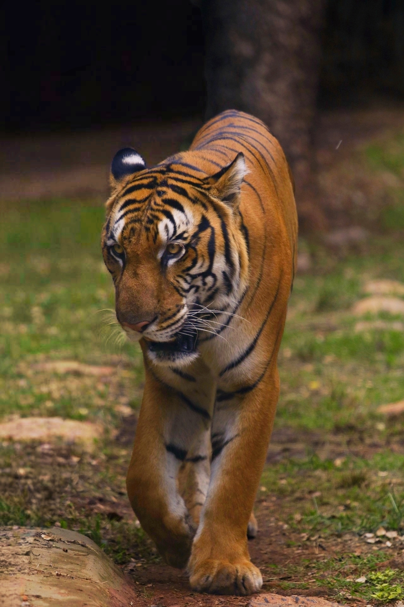
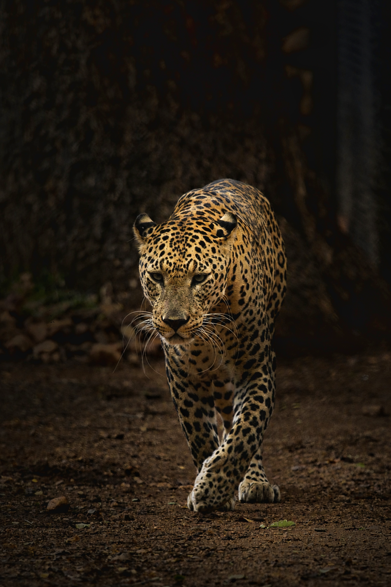

04 / WILDLIFE STORIES
Wait for the
unannounced.
Some encounters arrive quietly, then hold the entire world still. The camera follows after patience has done its work.
Field note 01Wildlife study

Kerala, India — Wildlife in stillness
01 / THE QUIET BEFORE

Alan Varghese / Wildlife Photographer
Kerala, India
Begin the journey02 / AN INVITATION TO LOOK
Observation asks for time. These photographs are a record of the pause before a moment becomes a memory.
03 / SELECTED WORKS
Each frame holds its own pace. Take yours.

04 / WILDLIFE STORIES
Some encounters arrive quietly, then hold the entire world still. The camera follows after patience has done its work.
05 / PHILOSOPHY
06 / THE PHOTOGRAPHER
Wildlife Photographer
Kerala, India
Alan Varghese is a wildlife photographer from Kerala, India, with a strong passion for observing and capturing wildlife through photography.
Photography, for me, is more than simply taking a picture. I enjoy photographs that carry a story, emotion, atmosphere, and meaning.
I try to capture wildlife naturally and authentically, preserving the feeling of the moment rather than relying on heavy manipulation.
I am passionate about wildlife photography, nature, visual storytelling, and observing the small details of the natural world.
07 / CONTINUE THE JOURNEY